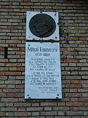

A monument jointly dedicated to Eminescu and Allama Iqbal was erected in Islamabad, Pakistan on 15 January 2004, commemorating Pakistani-Romanian ties, as well as the dialogue between civilizations which is possible through the cross-cultural appreciation of their poetic legacies. In 2004, the Mihai Eminescu Statue was erected in Montreal, Quebec, Canada.[27]
 Clik to visit Mihai_Eminescu#International_legacy